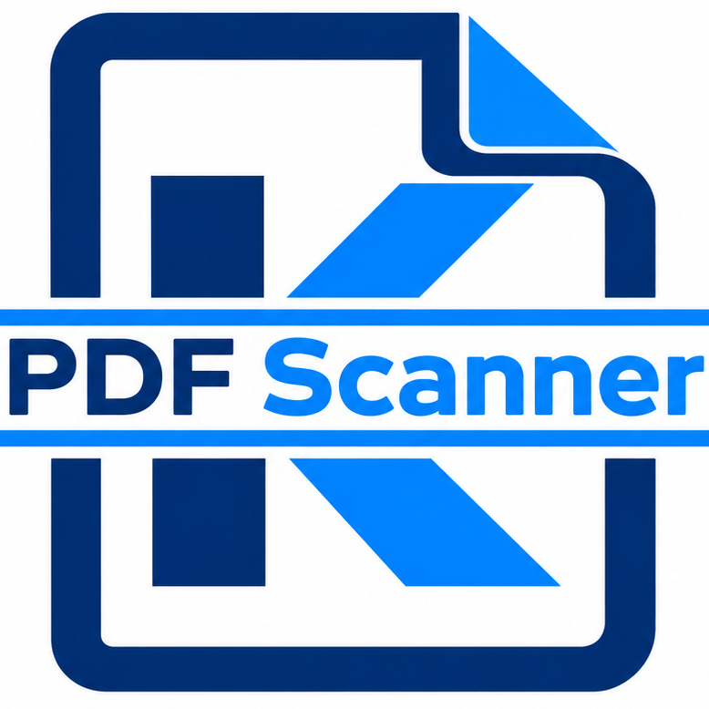

Turn born-digital PDFs into editable Word documents — free, open-source, and entirely offline.
K-Doc PDFScanner reads a born-digital PDF (not a scanned image) and rebuilds it as a
.docx file you can actually edit in Microsoft Word — keeping text, layout,
figures, and even simple math equations as close to the original as possible.
Paragraphs convert to real, editable Word text wherever the PDF allows it.
Simple math becomes an actual Word equation (OMML), not a flattened image.
Figures, margin icons, and anything that can't be made editable stay visually accurate.
Nothing you convert is ever uploaded anywhere. Conversion happens on your own machine.
A lightweight, optional check lets you know when a newer version is available.
No account, no trial, no paywall. Built and maintained by one independent developer.
K-Doc PDFScanner collects no data, telemetry, or analytics. The only network request it ever makes is a small, optional check against this repository for a newer version — nothing about your files or how you use the app is ever transmitted.